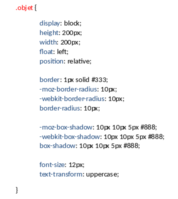

HELP CSS
Classes, sélecteurs et règles
Le fichier CSS va donner le style de la page web.
On sélectionne un objet grâce à son sélecteur, c'est-à-dire le nom de sa classe précédé d'un point .objet, et on lui applique les règles voulues.
Il ne faut jamais utiliser les ID pour sélectionner les objets que l'on veut modifier : ceux-ci sont réservés pour les animations avec Javascript !
Conventions d'écriture des règles CSS
Pour écrire les règles qui vont s'appliquer à un objet, on procèdera de la manière suivante :
- On ouvre la parenthèse ouvrante sur la même ligne que le sélecteur
- On laisse un espace entre le sélecteur et la parenthèse ouvrante
- On ferme la parenthèse fermante sur une ligne à part à la fin des règles
De plus, on procèdera toujours dans le même ordre, de l'extérieur vers le plus interne, suivant le modèle de boite suivant :
- BOX : les dimensions intrinsèques de l'argument
- BORDER : les bordures de l'argument
- BACKGROUND : le fond de l'argument
- TEXT : Le style du texte
- OTHER : tout ce que l'on ne peut pas mettre ailleurs!
Enfin, on saute une ligne entre chaque groupe de règles.
Et hop, un petit exemple :
Conventions d'écriture des classes CSS
On crée ainsi des classes pour chaque éléments de la structure HTML afin de styliser le tout d'une façon optimale.
Les classes doivent être crées ainsi :
- Un classe générique
- Une classe spécialisant l'objet
Par exemple, pour une barre de navigation horizontale, on créera les classes :
- .navbar
- .navbar-horizontal
Enfin, on distinguera les différentes briques de la page web selon la méthode SMACSS exposé ci-dessous :